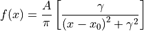
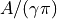

hyperspy._components.lorentzian module
- class hyperspy._components.lorentzian.Lorentzian(A=1.0, gamma=1.0, centre=0.0, module='numexpr', **kwargs)
Bases:
hyperspy._components.expression.ExpressionCauchy-Lorentz distribution (a.k.a. Lorentzian function) component.

Variable
Parameter

A

gamma

centre
- Parameters
A (float) – Area parameter, where  is the maximum (height) of peak.
gamma (float) – Scale parameter corresponding to the half-width-at-half-maximum of the peak, which corresponds to the interquartile spread.
centre (float) – Location of the peak maximum.
**kwargs – Extra keyword arguments are passed to the
Expressioncomponent.
For convenience the fwhm and height attributes can be used to get and set the full-with-half-maximum and height of the distribution, respectively.
- estimate_parameters(signal, x1, x2, only_current=False)
Estimate the Lorentzian by calculating the median (centre) and half the interquartile range (gamma).
Note that an insufficient range will affect the accuracy of this method.
- Parameters
- Return type
Notes
Adapted from gaussian.py and https://en.wikipedia.org/wiki/Cauchy_distribution
Examples
>>> g = hs.model.components1D.Lorentzian() >>> x = np.arange(-10, 10, 0.01) >>> data = np.zeros((32, 32, 2000)) >>> data[:] = g.function(x).reshape((1, 1, 2000)) >>> s = hs.signals.Signal1D(data) >>> s.axes_manager[-1].offset = -10 >>> s.axes_manager[-1].scale = 0.01 >>> g.estimate_parameters(s, -10, 10, False)